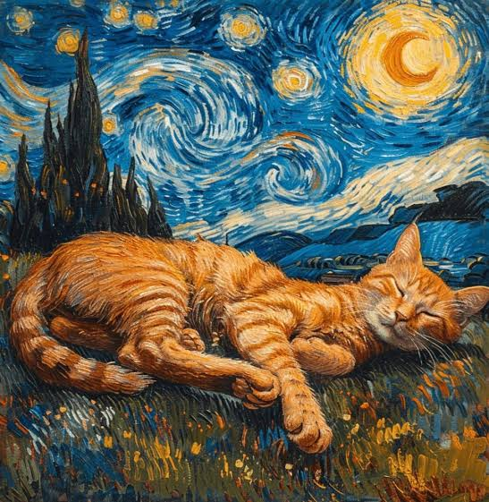

Hoy la IA puede crear imágenes, música y videos en segundos. Esto ayuda a los artistas, pero también abre el debate: ¿es arte si lo hizo una máquina? Lo importante es que el humano siga siendo el que tiene la idea y la creatividad.
En el trabajo, la IA ayuda a hacer tareas más rápido, a organizar información y a no repetir lo aburrido. No se trata de que nos quite el trabajo, sino de aprender a usarla como herramienta.

Un diseñador usa IA para hacer bocetos rápidos y luego él los mejora. Un estudiante usa IA para investigar, pero él escribe su tarea con sus palabras.